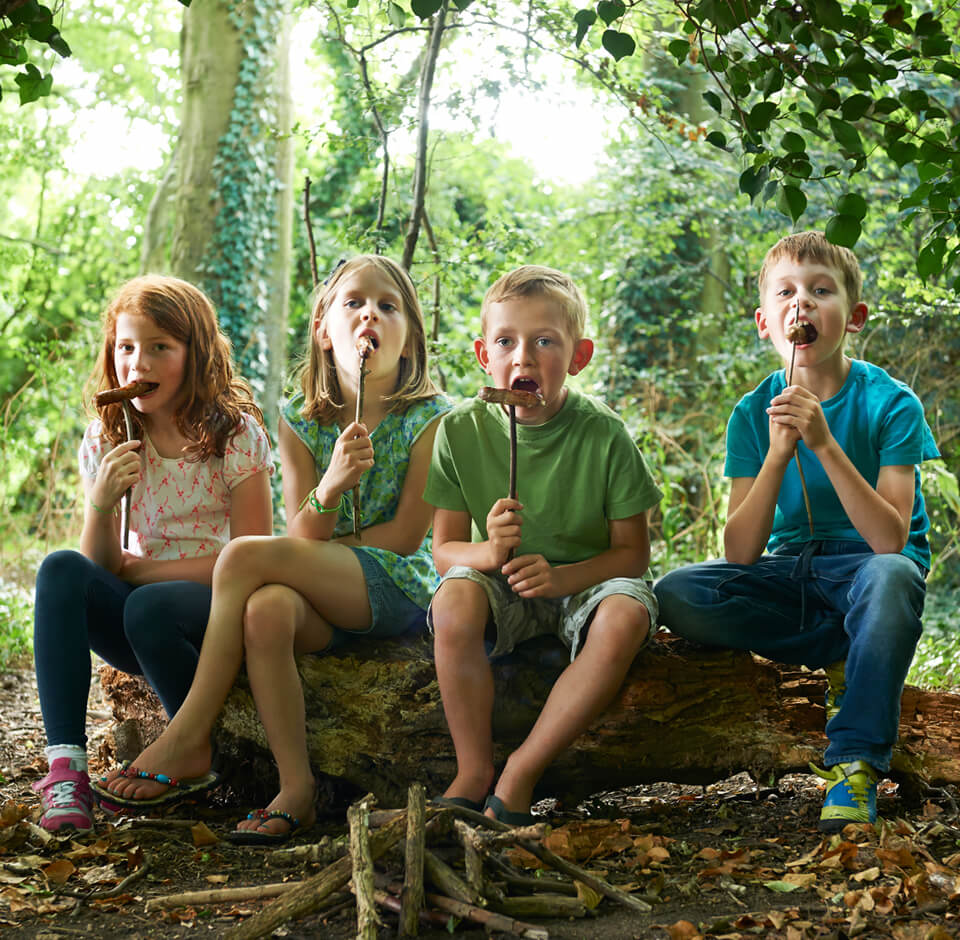
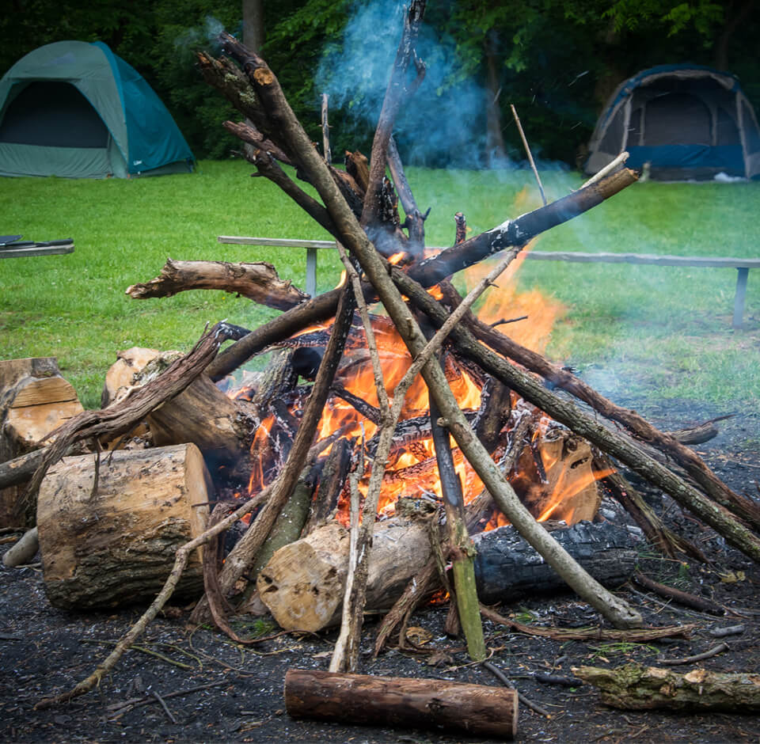

<!DOCTYPE html>
<html lang="en" dir="ltr">

<head>
  <!-- META TAGS -->
  <title>Harrow Woodcraft New Members</title>
  <meta charset="utf-8">
  <meta http-equiv="X-UA-Compatible" content="IE=edge">
  <meta name="description" content="Harrow Woodcraft is all about fun and learning for kids.">
  <meta name="viewport" content="width=device-width, initial-scale=1">

  <!-- SOCIAL TAGS -->

  <!-- CSS -->
  <link href="https://fonts.googleapis.com/css?family=Josefin+Sans:600,700|PT+Serif:400,400i" rel="stylesheet">
  <link rel="stylesheet" href="/css/main.css">
  <link rel="icon" href="/img/woodcraft_favicon.png" type="image/x-icon" />

  <!-- GOOGLE ANALYTICS -->
</head>

<body>
  <main>
    <header>
  <div class="header__branding">
    
    <h1 class="header__headline">HARROW WOODCRAFT FOLK</h1>
  </div>
  <a href="mailto:sample@sample.com?subject=Harrow Woodcraft enquiry"><button class="header__button" type="button" name="button">JOIN US</button></a>
</header>
    <section class="slider">
  <h2 class="slider__heading">Explore</h2>
  <h3 class="slider__heading__subheadline">with Harrow Woodcraft Folk</h3>
</section>
    <section class="introduction">
  <h4 class="introduction__heading margin-bottom-medium">Explore, discover and grow with Harrow Woodcraft Folk</h4>
  <p class="introduction__description">A movement for children and young people, open to everyone from birth to adult. We offer a place where children will grow in confidence, learn about the world and start to understand how to value our planet and
    each other.</p>
</section>
    <section class="schedules">
  <div class="schedules__introduction">
    <h4 class="schedules__heading">WE MEET EVERY TUESDAY IN CENTRAL HARROW</h4>
    <p class="schedules__description">We have three groups and we welcome the participation of parents in group nights and camping. Groups are split by age and listed below.</p>
  </div>
</section>
<li class="schedules_item">
  Elfins <span>(6 to 9 years)</span> 6.30pm to 8pm
</li>
<li class="schedules_item">
  Pioneers <span>(9 to 13 years)</span> 6.30pm to 8pm
</li>
<li class="schedules_item">
  Venturers <span>(13 to 16 years)</span> 8pm to 9.30pm
</li>
    <section class="program_usp_container">
  <div class="program_usp__item">
    
    <div class="program_usp__description">
      <h5 class="program_usp__item__heading">Make new friends</h5>
      <p>Three groups based on age, for boys and girls, meet every Tuesday during school term time. Group programme includes popular games, educational games, group projects, drama and woodcraft skills. Activities vary from week to week.</p>
    </div>
  </div>
  <div class="program_usp__item">
    
    <div class="program_usp__description">
      <h5 class="program_usp__item__heading">Camp locally in Ruislip</h5>
      <p>We camp four times a year, three short local camps at Bad Mess Wood in Ruislip and one summer camp. We have all the equipment and expertise you need to camp, including tents, cooking equipment as well as washing and toilet facilities, all on established safe camp sites.</p>
    </div>
  </div>
  <div class="program_usp__item">
    
    <div class="program_usp__description">
      <h5 class="program_usp__item__heading">Learn new life skills</h5>
      <p>We encourage parents to come along with their children. On camp you have the opportunity to learn new skills, including how to build a camp fire, map and compass skills, orienteering and various woodcraft games. All while connecting with nature!</p>
    </div>
  </div>
</section>
<div class="program_usp_mood">
  <div class="program_usp__item_img--small"></div>
  <div class="program_usp__item_img--extended"></div>
</div>

    <section class="contact">
  <div class="contact__main-message margin-bottom-medium">
    <h4>For more information on Harrow Woodcraft and how to join contact {name} on: <a href="mailto:sample@sample.com?subject=Harrow Woodcraft enquiry">name@email.co.uk</a></h4>
  </div>
  <div class="contact__about">
    <p class="margin-bottom-medium">This website has been created by Harrow Woodcraft Folk to encourage new membership for children and adult volunteers. We are part of the Woodcraft Folk and as such take safeguarding very seriously. All our
      leaders, adult volunteers and any
      adult attending camp is DBS checked. A DBS check is part of the joining process of the Woodcraft Folk movement. </p>
    <p class="italic">For more information on Woodcraft Folk: <a href="www.woodcraft.org.uk">www.woodcraft.org.uk</a></p>
    <p class="italic">For more information on Harrow Woodcraft Folk: <a href="http://www.harrowwoodcraftfolk.btck.co.uk">www.harrowwoodcraftfolk.btck.co.uk</a></p>
  </div>
</section>
    <div class="footer_image">
</div>
  </main>

  <!-- JS -->
  <script type="text/javascript" src="/js/app.js"></script>
</body>

</html>